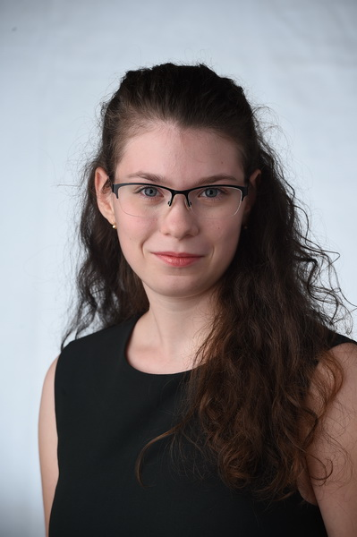

Bemutatkozás
 Soós Viktóriának hívnak. 2001. október 3-án születtem Budapesten és most Dunakeszin élek a családommal. Jelenleg a Budapesti Műszaki és Gazdaságtudományi Egyetem Gépészkarának energetikai mérnöki szakának elsőéves hallgatója vagyok.
Már gyermekkoromban is tudtam, hogy matematikával szeretnék foglalkozni, mert megtaláltam a logikát és a szépséget benne. Emellé jött még később a fizika és a kémia is, amik komolyabban érdekeltek. Ezért nem volt kérdés a továbbtanulás terén, hogy melyik egyetemet válasszam. Azonban a szak kiválasztása már egy picivel nehezebb volt. Végig gondoltam, hogy miért is szeretnék mérnök lenni, miért is szeretnék a mérnöktársadalom tagja lenni. A válasz pedig a következő volt: mert szeretnék új megoldásokat, új ötleteket kitalálni, a kifejlesztésükben részt venni és ezekkel az embereket és a bolygónkat segíteni. Ezenkívül nagyon érdekel a környezetvédelem, az újrahasznosítás és a megújuló energiaforrások témái, ezért az energetikai mérnöki szakot választottam.